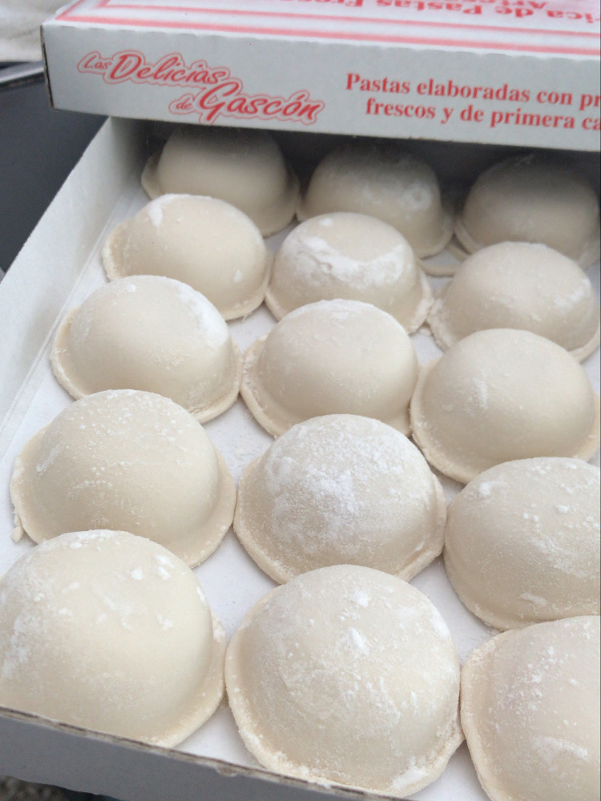

Nuestra historia
Comenzamos con este emprendimiento familiar hace 20 años. En este mes de Junio estamos cumpliendo los 21 años de Las Delicias!!
Desde 2008 estamos en esta locación, pero anteriorimente estábamos en Costa Rica y Gascón y por eso decidimos conservar el nombre "Las Delicias de Gascón".
La calidad y precios de nuestros productos son dos factores muy importantes que siempre nos caracterizaron.
Si todavia no probaste nuestras pastas no dejes pasar mas el tiempo, no te vas a arrepentir! Tenemos una gran variedad en pastas artesanales y pastas rellenas, salsas caseras, y alimentos producido por nosotros.